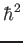
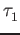
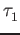

Developer's Manual for QUANTUM ESPRESSO(v. 5.0.2)
The intended audience of this guide is everybody who wants to:
People who want to know about the capabilities of QUANTUM ESPRESSO, or who want just to use it, should read the User Guide.
People who want to know about the methods or the physics behind QUANTUM ESPRESSO should read first the relevant literature (some pointers in the User Guide).
You can contribute to a better QUANTUM ESPRESSO, even as an ordinary user, by:
If you want to get involved as a developer and contribute serious or nontrivial stuff (or even simple and trivial stuff), you should first of all register for the QUANTUM ESPRESSO project on qe-forge.org. Please introduce yourself when you register so that the administrator knows that you are a real person.
qe-forge.org is the portal for QUANTUM ESPRESSO developers, contributors, and for anybody else wanting to develop a project in the field of atomistic simulations. qe-forge.org provides a CVS or SVN repository, mailing lists, a wiki, upload space, a bug tracking facility, various other tools that are useful for developers. You can use either CVS or SVN but not both together. Note that the usage of the wiki provided by qe-forge.org is currently disabled for security reasons.
You can open your own project, retaining all rights on it (including the right not to release anything); or else, you can register as a developer in an existing project (or both).
Currently QUANTUM ESPRESSO uses the following development tools:
Once you are registered, you need to register your SSH keys in order to have read-write access the CVS or SVN repository (if you have been allowed by the project leader). The procedure is as follows:
If you want to become a QUANTUM ESPRESSO developer, you should subscribe to the two mailing lists
Various procedures can be followed to contribute new developments. The ideal procedure depends upon the kind of project you have in mind. In all cases, you should learn how to use SVN: see Sect.10, "Using SVN". The three typical cases are:
For case a), you should from time to time update your copy (using command svn update), verify if changes made meanwhile by other developers conflict with your changes. Conflicts are in most cases easy to solve: see Sect. 10.2 for hints on how to remove conflicts and on how to figure out what went wrong. Once you are happy with your modified version, you can commit your changes, or ask one of the expert developers to do this if you do not feel confident enough.
For case b), you should from time to time align your branch with the trunk.
For case c): if your project is ``loosely coupled'' to QUANTUM ESPRESSO, that is, it just uses the QUANTUM ESPRESSO installation procedure and/or data files, there shouldn't be any major problems, since major incompatible changes are very rare (note however that the files produced by the phonon code change more frequently). If your project is ``tightly bound'', i.e. it uses routines from QUANTUM ESPRESSO, it is prudent to notify the other developers.
Subdirectory flib/ contains libraries written in fortran77 (*.f) and in fortran-90 (*.f90). The latter should not depend on any module, except for modules kinds and constants.
Subdirectory clib/ contains libraries written in C (*.c). Functions that are called by fortran should be preprocessed using the macros:
The code contains C-style preprocessing directives. There are two ways to do preprocessing of fortran files:
In the first case, one needs to specify in the make.sys file the fortran compiler option that tells the compiler to pre-process first. In the second case, one needs to specify the C precompiler and options (if needed) in make.sys. Normally, configure should take care of this.
The configure script is generated from its source file configure.ac by the GNU autoconf utility (http://www.gnu.org/software/autoconf/). Don't edit configure directly: whenever it gets regenerated, your changes will be lost. Instead, go to the install/ directory, edit configure.ac, then run autoconf to regenerate configure. If you want to keep the old configure, make a copy first.
GNU autoconf is installed by default on most Unix/Linux systems. If you don't have it on your system, you'll have to install it. You will need a recent version (e.g. v.2.65) of autoconf, because our configure.ac file uses recent syntax.
configure.ac is a regular Bourne shell script (i.e., "sh" - not csh!), except that:
You may refer to the GNU autoconf Manual for more info.
make.sys.in is the source file for make.sys, that configure generates: you might want to edit that file as well. The generation procedure is as follows: if configure.ac contains the macro "AC_SUBST(name)", then every occurrence of "@name@" in the source file will be substituted with the value of the shell variable "name" at the point where AC_SUBST was called.
Similarly, configure.msg is generated from configure.msg.in: this file is only used by configure to print its final report, and isn't needed for the compilation. We did it this way so that our configure may also be used by other projects, just by replacing the QUANTUM ESPRESSO-specific configure.msg.in by your own.
configure writes a detailed log of its operation to config.log. When any configuration step fails, you may look there for the relevant error messages. Note that it is normal for some checks to fail.
In order to support a previously unsupported architecture, first you have to figure out which compilers, compilation flags, libraries etc. should be used on that architecture. In other words, you have to write a make.sys that works: you may use the manual configuration procedure for that (see the User Guide). Then, you have to modify configure so that it can generate that make.sys automatically.
To do that, you have to add the case for your architecture in several places throughout configure.ac:
Look for these lines:
if test "$arch" = ""
then
case $host in
ia64-*-linux-gnu ) arch=ia64 ;;
x86_64-*-linux-gnu ) arch=x86_64 ;;
*-pc-linux-gnu ) arch=ia32 ;;
etc.
Here you must add an entry corresponding to your architecture and
operating system. Run config.guess to obtain the string identifying
your system.
For instance on a PC it may be "i686-pc-linux-gnu", while on IBM SP4
"powerpc-ibm-aix5.1.0.0". It is convenient to put some asterisks to
account for small variations of the string for different machines of
the same family. For instance, it could be "aix4.3" instead of
"aix5.1", or "athlon" instead of "i686"...
Look for these lines:
# candidate compilers and flags based on architecture
case $arch in
ia64 | x86_64 )
...
ia32 )
...
aix )
...
etc.
Add an entry for your value of $arch, and set there the appropriate values for several variables, if needed (all variables are assigned some reasonable default value, defined before the "case" block):
- "try_f90" should contain the list of candidate Fortran 90 compilers, in order of decreasing preference (i.e. configure will use the first it finds). If your system has parallel compilers, you should list them in "try_mpif90".
- "try_ar", "try_arflags": for these, the values "ar" and "ruv" should be always fine, unless some special flag is required (e.g., -X64 With sp4).
- you should define "try_dflags" if there is any "#ifdef" specific to your machine: for instance, on IBM machines, "try_dflags=-D__AIX" . A list of such flags can be found in file include/defs.h.README.
You shouldn't need to define the following: - "try_iflags" should be set to the appropriate "-I" option(s) needed by the preprocessor or by the compiler to locate *.h files to be included; try_iflags="-I../include" should be good for most cases
For example, here's the entry for IBM machines running AIX:
aix )
try_mpif90="mpxlf90_r mpxlf90"
try_f90="xlf90_r xlf90 $try_f90"
try_arflags="-X64 ruv"
try_arflags_dynamic="-X64 ruv"
try_dflags="-D__AIX -D__XLF"
;;
The following step is to look for both serial and parallel fortran
compilers:
# check serial Fortran 90 compiler...
...
AC_PROG_F77($f90)
...
# check parallel Fortran 90 compiler
...
AC_PROG_F77($mpif90)
...
echo setting F90... $f90
echo setting MPIF90... $mpif90
A few compilers require some extra work here: for instance, if the
Intel Fortran compiler was selected, you need to know which version
because different versions need different flags.
At the end of the test,
- $mpif90 is the parallel compiler, if any; if no parallel compiler is found or if -disable-parallel was specified, $mpif90 is the serial compiler
- $f90 is the serial compiler
Next step: the choice of (serial) C and Fortran 77 compilers. Look for these lines:
# candidate C and f77 compilers good for all cases
try_cc="cc gcc"
try_f77="$f90"
case "$arch:$f90" in
*:f90 )
....
etc.
Here you have to add an entry for your architecture, and since the
correct choice of C and f77 compilers may depend on the fortran-90
compiler, you may need to specify the f90 compiler as well.
Again, specify the compilers in try_cc and try_f77 in order of
decreasing preference. At the end of the test,
- $cc is the C compiler
- $f77 is the Fortran 77 compiler, used to compile *.f files (may coincide with $f90)
Look for these lines:
# check Fortran compiler flags
...
case "$arch:$f90" in
ia64:ifort* | x86_64:ifort* )
...
ia64:ifc* )
...
etc.
Add an entry for your case and define:
- "try_fflags": flags for Fortran 77 compiler.
- "try_f90flags": flags for Fortran 90 compiler. In most cases they will be the same as in Fortran 77 plus some others. In that case, define them as "$(FFLAGS) -something_else".
- "try_fflags_noopt": flags for Fortran 77 with all optimizations turned off: this is usually "-O0". These flags must be used for compiling flib/dlamch.f (part of our version of Lapack): it won't work properly with optimization.
- "try_ldflags": flags for the linking phase (not including the list of libraries: this is decided later).
- "try_ldflags_static": additional flags to select static compilation (i.e., don't use shared libraries).
- "try_dflags": must be defined if there is in the code any #ifdef specific to your compiler (for instance, -D__INTEL for Intel compilers). Define it as "$try_dflags -D..." so that pre-existing flags, if any, are preserved.
- if the Fortran 90 compiler is not able to invoke the C preprocessor automatically before compiling, set "have_cpp=0" (the opposite case is the default). The appropriate compilation rules will be generated accordingly. If the compiler requires that any flags be specified in order to invoke the preprocessor (for example, "-fpp " - note the space), specify them in "pre_fdflags".
For example, here's the entry for ifort on Linux PC:
ia32:ifort* )
try_fflags="-O2 -tpp6 -assume byterecl"
try_f90flags="\$(FFLAGS) -nomodule"
try_fflags_noopt="-O0 -assume byterecl"
try_ldflags=""
try_ldflags_static="-static"
try_dflags="$try_dflags -D__INTEL"
pre_fdflags="-fpp "
;;
Next step: flags for the C compiler. Look for these lines:
case "$arch:$cc" in
*:icc )
...
*:pgcc )
...
etc.
Add an entry for your case and define:
- "try_cflags": flags for C compiler.
- "c_ldflags": flags for linking, when using the C compiler as linker. This is needed to check for libraries written in C, such as FFTW.
- if you need a different preprocessor from the standard one ($CC -E), define it in "try_cpp".
For example for XLC on AIX:
aix:mpcc* | aix:xlc* | aix:cc )
try_cflags="-q64 -O2"
c_ldflags="-q64"
;;
Finally, if you have to use a nonstandard preprocessor, look for these
lines:
echo $ECHO_N "setting CPPFLAGS... $ECHO_C"
case $cpp in
cpp) try_cppflags="-P -traditional" ;;
fpp) try_cppflags="-P" ;;
...
and set "try_cppflags" as appropriate.
To instruct configure to search for libraries, you must tell it two things: the names of libraries it should search for, and where it should search.
The following libraries are searched for:
- BLAS or equivalent. Some vendor replacements for BLAS that are supported by QUANTUM ESPRESSO are:
MKL on Linux, 32- and 64-bit Intel CPUsMoreover, ATLAS is used over BLAS if available.
ACML on Linux, 64-bit AMD CPUs
essl on AIX
SCSL on sgi altix
SUNperf on sparc
- LAPACK or equivalent. Some vendor replacements for LAPACK that are supported by QUANTUM ESPRESSO are:
mkl on linux SUNperf on sparc
- FFTW (version 3) or another supported FFT library. The latter include:
essl on aix ACML on Linux, 64-bit AMD CPUs SUNperf on sparc
- the MASS vector math library on aix
- an MPI library. This is often automatically linked by the compiler
If you have another replacement for the above libraries, you'll have to insert a new entry in the appropriate place.
This is unfortunately a little bit too complex to explain.
Basic info:
"AC_SEARCH_LIBS(function, name, ...)" looks for symbol
"function" in library "libname.a". If that is found, "-lname" is
appended to the LIBS environment variable (initially empty).
The real thing is more complicated than just that because the
"-Ldirectory" option must be added to search in a nonstandard
directory, and because a given library may require other libraries as
prerequisites (for example, Lapack requires BLAS).
In calculations using only the
(G) = ,(G) =
A side effect on parallelization is that G
The distinction between the dimensions of the FFT grid,
(nr1,nr2,nr3) and the physical dimensions of the array,
(nr1x,nr2x,nr3x) is done only because it is computationally
convenient in some cases that the two sets are not the same.
In particular, it is often convenient to have nrx1=nr1+1
to reduce memory conflicts.
In parallel execution (MPI only), N independent processes are started
(do not start more than one per processor!) that communicate via calls
to MPI libraries. Each process has its own set of variables and knows
nothing about other processes' variables. Variables that take little memory
are replicated, those that take a lot of memory (wavefunctions, G-vectors,
R-space grid) are distributed.
Quantum ESPRESSO employ arrays whose memory requirements fall
into three categories.
QUANTUM ESPRESSO restart file specifications:
Paolo Giannozzi scripsit AD 2005-11-11,
Last modified by Andrea Ferretti 2006-10-29
Requirements: the data file should be
Format name: QEXML
The "restart file" is actually a "restart directory", containing several files and sub-directories.
For CP/FPMD, the restart directory is created as "$prefix_$ndw/", where $prefix is the value of the
variable "prefix". $ndw the value of variable ndw, both read in input; it is read from "$prefix_$ndr/",
where $ndr the value of variable ndr, read from input.
For PWscf, both input and output directories are called
"$prefix.save/".
The content of the restart directory is as follows:
Short syntax, used only in a few cases:
First-level tags:
There are currently no strict guidelines for developers. You
should however try to follow at least the following loose ones:
New input variables should be added to
''Modules/input_parameters.f90'',
then copied to the code internal variables in the ''input.f90''
subroutine. The namelists and cards parsers are in
''Modules/read_namelists.f90'' and ''Modules/read_cards.f90''.
Files ''input_parameters.f90'', ''read_namelists.f90'',
''read_cards.f90'' are shared by all codes, while each code
has its own version of ''input.f90'' used to copy input values
into internal variables
EXAMPLE:
suppose you need to add a new input variable called ''pippo''
to the namelist control, then:
Subversion, also known as SVN, is a software that allows many
developers to work and maintain a single copy of a software in a
central location (repository).
It is installed by default on many Unix machines, or otherwise
it can be very easily installed.
For the end user, SVN is rather similar to CVS:
if no advanced features are used, the basic commands are the same.
More information on SVN can be found here:
http://subversion.apache.org/.
Follow the instructions in
http://qe-forge.org/gf/project/q-e/scmsvn,
under `Access Info'',
to check out (i.e. download) the SVN repository in either
read-write or anonymous mode.
The distribution will appear in directory trunk/espresso/.
Branches (i.e. sub-versions) will appear as separate directories.
To update the code to the current version:
Sometimes, the conflict is not so easy to solve. In this case, you
can selectively update your repository at a given date, or at a given
revision number, using command (ARG=revision number, or {"date"}):
Fortran books:
This document was generated using the
LaTeX2HTML translator Version 2002-2-1 (1.71)
Copyright © 1993, 1994, 1995, 1996,
Nikos Drakos,
Computer Based Learning Unit, University of Leeds.
The command line arguments were:
The translation was initiated by Layla Martin-Samos Colomer on 2012-11-21

 .
.
5 Structure of the code
The code contains C-style preprocessing directives. Most fortran compilers directly support them; some don't, and preprocessing is ''hand-made'' by the makefile using the C preprocessor cpp. The C preprocessor may:
5.1 Preprocessing
The file include/defs.h.README contains a list of definitions that are used in the code. In order to make preprocessing options easy to see, preprocessing variables should start with
two underscores, as __expression in the above example. Traditionally ''preprocessed'' variables are also written in uppercase.
#ifdef __expression
...code A...
#else
...code B...
#endif
If ''expression'' is defined (with a #define command
or from the command line with option D__expression),
then ...code A... is sent to output; otherwise
...code B... is sent to output.
6 Format of arrays containing charge density, potential, etc.
The index of arrays used to store functions defined on 3D meshes is
actually a shorthand for three indices, following the FORTRAN convention
("leftmost index runs faster"). An example will explain this better.
Suppose you have a 3D array psi(nr1x,nr2x,nr3x). FORTRAN
compilers store this array sequentially in the computer RAM in the following way:
psi( 1, 1, 1)
psi( 2, 1, 1)
...
psi(nr1x, 1, 1)
psi( 1, 2, 1)
psi( 2, 2, 1)
...
psi(nr1x, 2, 1)
...
...
psi(nr1x,nr2x, 1)
...
psi(nr1x,nr2x,nr3x)
etc
Let ind be the position of the (i,j,k) element in the above list:
the following relation
ind = i + (j - 1) * nr1x + (k - 1) * nr2x * nr1x
holds. This should clarify the relation between 1D and 3D indexing. In real
space, the (i,j,k) point of the FFT grid with dimensions
nr1 (

 rijk =
rijk =  +  +
+  + 
7 Parallelization
7.0.1 Usage of #ifdef __MPI
Calls to MPI libraries require variables contained into a
mpif.h file that is usually absent on serial machines.
IN order to prevent compilation problems, it is a good idea to
follow these rules:
7.1 Tricks and pitfalls
IF ( ionode ) THEN
OPEN ( ..., IOSTAT=ierr )
...
END IF
CALL mp_bcast( ierr, ... )
CALL errore( 'routine','error', ierr )
The same applies to all operations performed on a single processor,
or a subgroup of processors: any error code must be broadcast before
the check.
7.2 Data distribution
Their size decreases linearly with the number of processors in a pool.
Their size decreases linearly with the number of processors in a ortho
or diag group.
The size of these arrays is independent on the number of processors.
8 File Formats
8.1 Data file(s)
8.1.1 Rationale
Solutions:
Integration with other packages:
8.1.2 General structure
Format version: 1.4.0
data-file.xml which contains:
- general information that doesn't require large data set:
atomic structure, lattice, k-points, symmetries,
parameters of the run, ...
- pointers to other files or directories containing bulkier
data: grids, wavefunctions, charge density, potentials, ...
charge_density.dat contains the charge density
spin_polarization.dat contains the spin polarization (rhoup-rhodw) (LSDA case)
magnetization.x.dat
magnetization.y.dat contain the spin polarization along x,y,z
magnetization.z.dat (noncollinear calculations)
lambda.dat contains occupations (Car-Parrinello dynamics only)
mat_z.1 contains occupations (ensemble-dynamics only)
<pseudopotentials> A copy of all pseudopotential files given in input
<k-point dirs> Subdirectories K00001/, K00002/, etc, one per k-point.
Each k-point directory contains:
evc.dat wavefunctions for spin-unpolarized calculations, OR
evc1.dat
evc2.dat spin-up and spin-down wavefunctions, respectively,
for spin polarized (LSDA) calculations;
gkvectors.dat the details of specific k+G grid;
eigenval.xml eigenvalues for the corresponding k-point
for spin-unpolarized calculations, OR
eigenval1.xml spin-up and spin-down eigenvalues,
eigenval2.xml for spin-polarized calculations;
in a molecular dynamics run, also wavefunctions at the preceding time step:
evcm.dat for spin-unpolarized calculations OR
evcm1.dat
evcm2.dat for spin polarized calculations;
8.1.3 Structure of file "data-file.xml"
XML Header: whatever is needed to have a well-formed XML file
Body: introduced by <Root>, terminated by </Root>. Contains first-level tags
only. These contain only other tags, not values. XML syntax applies.
First-level tags: contain either
second-level tags, OR
data tags: tags containing data (values for a given variable), OR
file tags: tags pointing to a file
data tags syntax ( [...] = optional ) :
<TAG type="vartype" size="n" [UNIT="units"] [LEN="k"]>
values (in appropriate units) for variable corresponding to TAG:
n elements of type vartype (if character, of lenght k)
</TAG>
where TAG describes the variable into which data must be read;
"vartype" may be "integer", "real", "character", "logical";
if type="logical", LEN=k" must be used to specify the length
of the variable character; size="n" is the dimension.
Acceptable values for "units" depend on the specific tag.
<TAG attribute="something"/> .
For instance:
<FFT_GRID nr1="NR1" nr2="NR2" nr3="NR3"/>
defines the value of the FFT grid parameters nr1, nr2, nr3
for the charge density
8.1.4 Sample
Header:
<?xml version="1.0"?>
<?iotk version="1.0.0test"?>
<?iotk file_version="1.0"?>
<?iotk binary="F"?>
These are meant to be used only by iotk (actually they aren't)
- <HEADER> (global information about fmt version)
- <CONTROL> (miscellanea of internal information)
- <STATUS> (information about the status of the CP simulation)
- <CELL> (lattice vector, unit cell, etc)
- <IONS> (type and positions of atoms in the unit cell etc)
- <SYMMETRIES> (symmetry operations)
- <ELECTRIC_FIELD> (details for an eventual applied electric field)
- <PLANE_WAVES> (basis set, cutoffs etc)
- <SPIN> (info on spin polarizaztion)
- <MAGNETIZATION_INIT> (info about starting or constrained magnetization)
- <EXCHANGE_CORRELATION>
- <OCCUPATIONS> (occupancy of the states)
- <BRILLOUIN_ZONE> (k-points etc)
- <PHONON> (info for phonon calculations)
- <PARALLELISM> (specialized info for parallel runs)
- <CHARGE-DENSITY>
- <TIMESTEPS> (positions, velocities, nose' thermostats)
- <BAND_STRUCTURE_INFO> (dimensions and basic data about band structure)
- <EIGENVALUES> (eigenvalues and related data)
- <EIGENVECTORS> (eigenvectors and related data)
* Tag description
<HEADER>
<FORMAT> (name and version of the format)
<CREATOR> (name and version of the code generating the file)
</HEADER>
<CONTROL>
<PP_CHECK_FLAG> (whether the file can be used for post-processing)
<LKPOINT_DIR> (whether kpt-data are written in sub-directories)
<Q_REAL_SPACE> (whether augmentation terms are used in real space)
</CONTROL>
<STATUS> (optional)
<STEP> (number $n of steps performed, i.e. we are at step $n)
<TIME> (total simulation time)
<TITLE> (a job descriptor)
<ekin> (kinetic energy)
<eht> (hartree energy)
<esr> (Ewald term, real-space contribution)
<eself> (self-interaction of the Gaussians)
<epseu> (pseudopotential energy, local)
<enl> (pseudopotential energy, nonlocal)
<exc> (exchange-correlation energy)
<vave> (average of the potential)
<enthal> (enthalpy: E+PV)
</STATUS>
<CELL>
<BRAVAIS_LATTICE>
<LATTICE_PARAMETER>
<CELL_DIMENSIONS> (cell parameters)
<DIRECT_LATTICE_VECTORS>
<UNITS_FOR_DIRECT_LATTICE_VECTORS>
<a1>
<a2>
<a3>
<RECIPROCAL_LATTICE_VECTORS>
<UNITS_FOR_RECIPROCAL_LATTICE_VECTORS>
<b1>
<b2>
<b3>
</CELL>
<IONS>
<NUMBER_OF_ATOMS>
<NUMBER_OF_SPECIES>
<UNITS_FOR_ATOMIC_MASSES>
For each $n-th species $X:
<SPECIE.$n>
<ATOM_TYPE>
<MASS>
<PSEUDO>
</SPECIE.$n>
<PSEUDO_DIR>
<UNITS_FOR_ATOMIC_POSITIONS>
For each atom $n of species $X:
<ATOM.$n SPECIES="$X">
</IONS>
<SYMMETRIES>
<NUMBER_OF_SYMMETRIES>
<INVERSION_SYMMETRY>
<NUMBER_OF_ATOMS>
<UNITS_FOR_SYMMETRIES>
For each symmetry $n:
<SYMM.$n>
<INFO>
<ROTATION>
<FRACTIONAL_TRANSLATION>
<EQUIVALENT_IONS>
</SYMM.$n>
</SYMMETRIES>
<ELECTRIC_FIELD> (optional)
<HAS_ELECTRIC_FIELD>
<HAS_DIPOLE_CORRECTION>
<FIELD_DIRECTION>
<MAXIMUM_POSITION>
<INVERSE_REGION>
<FIELD_AMPLITUDE>
</ELECTRIC_FIELD>
<PLANE_WAVES>
<UNITS_FOR_CUTOFF>
<WFC_CUTOFF>
<RHO_CUTOFF>
<MAX_NUMBER_OF_GK-VECTORS>
<GAMMA_ONLY>
<FFT_GRID>
<GVECT_NUMBER>
<SMOOTH_FFT_GRID>
<SMOOTH_GVECT_NUMBER>
<G-VECTORS_FILE> link to file "gvectors.dat"
<SMALLBOX_FFT_GRID>
</PLANE_WAVES>
<SPIN>
<LSDA>
<NON-COLINEAR_CALCULATION>
<SPIN-ORBIT_CALCULATION>
<SPIN-ORBIT_DOMAG>
</SPIN>
<EXCHANGE_CORRELATION>
<DFT>
<LDA_PLUS_U_CALCULATION>
if LDA_PLUS_U_CALCULATION
<NUMBER_OF_SPECIES>
<HUBBARD_LMAX>
<HUBBARD_L>
<HUBBARD_U>
<HUBBARD_ALPHA>
endif
</EXCHANGE_CORRELATION>
if hybrid functional
<EXACT_EXCHANGE>
<x_gamma_extrapolation>
<nqx1>
<nqx2>
<nqx3>
<exxdiv_treatment>
<yukawa>
<ecutvcut>
<exx_fraction>
<screening_parameter>
</EXACT_EXCHANGE>
endif
<OCCUPATIONS>
<SMEARING_METHOD>
if gaussian smearing
<SMEARING_TYPE>
<SMEARING_PARAMETER>
endif
<TETRAHEDRON_METHOD>
if use tetrahedra
<NUMBER_OF_TETRAHEDRA>
for each tetrahedron $t
<TETRAHEDRON.$t>
endif
<FIXED_OCCUPATIONS>
if using fixed occupations
<INFO>
<INPUT_OCC_UP>
if lsda
<INPUT_OCC_DOWN>
endif
endif
</OCCUPATIONS>
<BRILLOUIN_ZONE>
<NUMBER_OF_K-POINTS>
<UNITS_FOR_K-POINTS>
<MONKHORST_PACK_GRID>
<MONKHORST_PACK_OFFSET>
For each k-point $n:
<K-POINT.$n>
</BRILLOUIN_ZONE>
<PHONON>
<NUMBER_OF_MODES>
<UNITS_FOR_Q-POINT>
<Q-POINT>
</PHONON>
<PARALLELISM>
<GRANULARITY_OF_K-POINTS_DISTRIBUTION>
</PARALLELISM>
<CHARGE-DENSITY>
link to file "charge_density.rho"
</CHARGE-DENSITY>
<TIMESTEPS> (optional)
For each time step $n=0,M
<STEP$n>
<ACCUMULATORS>
<IONS_POSITIONS>
<stau>
<svel>
<taui>
<cdmi>
<force>
<IONS_NOSE>
<nhpcl>
<nhpdim>
<xnhp>
<vnhp>
<ekincm>
<ELECTRONS_NOSE>
<xnhe>
<vnhe>
<CELL_PARAMETERS>
<ht>
<htve>
<gvel>
<CELL_NOSE>
<xnhh>
<vnhh>
</CELL_NOSE>
</TIMESTEPS>
<BAND_STRUCTURE_INFO>
<NUMBER_OF_BANDS>
<NUMBER_OF_K-POINTS>
<NUMBER_OF_SPIN_COMPONENTS>
<NON-COLINEAR_CALCULATION>
<NUMBER_OF_ATOMIC_WFC>
<NUMBER_OF_ELECTRONS>
<UNITS_FOR_K-POINTS>
<UNITS_FOR_ENERGIES>
<FERMI_ENERGY>
</BAND_STRUCTURE_INFO>
<EIGENVALUES>
For all kpoint $n:
<K-POINT.$n>
<K-POINT_COORDS>
<WEIGHT>
<DATAFILE> link to file "./K$n/eigenval.xml"
</K-POINT.$n>
</EIGENVALUES>
<EIGENVECTORS>
<MAX_NUMBER_OF_GK-VECTORS>
For all kpoint $n:
<K-POINT.$n>
<NUMBER_OF_GK-VECTORS>
<GK-VECTORS> link to file "./K$n/gkvectors.dat"
for all spin $s
<WFC.$s> link to file "./K$n/evc.dat"
<WFCM.$s> link to file "./K$n/evcm.dat" (optional)
containing wavefunctions at preceding step
</K-POINT.$n>
</EIGENVECTORS>
8.2 Restart files
9 Modifying/adding/extending QUANTUM ESPRESSO
9.1 Programming style (or lack of it)
9.2 Adding or modifying input variables
INTEGER :: pippo = 0
NAMELIST / control / ....., pippo
Remember: always set an initial value!
subroutine control_default( prog )
...
IF( prog == 'PW' ) pippo = 10
...
end subroutine
This routine sets the default value for pippo (can be different in
different codes)
subroutine control_bcast( )
...
call mp_bcast( pippo )
...
end subroutine
The package is available read-only using anonymous access to the Subversion
(SVN) repository. Developers can have read-write access when needed. Note
that the latest (development) version may not work properly, and sometimes
not even compile properly. Use at your own risk.
10 Using SVN
10.1 SVN operations
svn update
in the directory containing the distribution.
To see the difference between the current version and your modified
copy:
svn diff
To save your modified version into the repository:
(read-write access only):
svn commit
If you also want to add a new file, before commiting give command
svn add
When you update your working copy of the repository,
you may encounter two types of conflicts:
10.2 Removing conflicts
In the former case, look into the conflicting section: in most cases,
conflicts are trivial (format changes, white spaces) or easily solved
(the part of the code you were modifying has been moved to another place,
for instance). In the latter case, sometimes the problem can also be
trivially solved (a variable has changed name or has been moved, a
subroutine is called with different arguments, etc.)
svn update -r ARG
In this way you can locate which change is the culprit.
The web-SVN interface:
http://qe-forge.org/gf/project/q-e/scmsvn
will also be very helpful in locating the problem.
Of course, communication with other developers will also help.
11 Bibliography
On-line tutorials:
(info courtesy of Goranka Bilalbegovic)
About this document ...
Developer's Manual for QUANTUM ESPRESSO(v. 5.0.2)
Copyright © 1997, 1998, 1999,
Ross Moore,
Mathematics Department, Macquarie University, Sydney.
latex2html -t 'Developer's Manual for Quantum-ESPRESSO' -html_version 3.2,math -toc_depth 3 -split 3 -toc_stars -show_section_numbers -local_icons -image_type png developer_man.tex


Layla Martin-Samos Colomer
2012-11-21